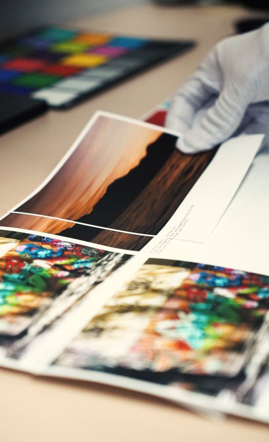

Excelência em Fine Art: Impressão, Tinta e Tecnologia
O estudioabc nasceu do encontro entre a tradição da arte sobre papel e as inovações proporcionadas pela tecnologia contemporânea. Em nosso ateliê, cada etapa é pensada para atender aos mais criteriosos padrões internacionais de conservação, autenticidade e permanência, dialogando com expectativas de artistas e colecionadores que buscam algo além da simples reprodução: desejam uma verdadeira obra Fine Art, digna de museus e galerias.
Nosso processo começa pela curadoria meticulosa dos insumos. A escolha do papel não é apenas uma decisão estética; ela representa o início do compromisso com a longevidade e fidelidade da obra. Utilizamos papéis de algodão puro ou fibras naturais, livres de ácido, todos certificados com selo ISO 9706 e validados por laudos internacionais de permanência. Esses substratos não apenas suportam as tintas sem degradação ao longo dos anos, mas também valorizam a textura, a profundidade e a expressão do artista.

Tecnologia em Tintas Pigmentadas
O coração da impressão Fine Art está na tecnologia das tintas pigmentadas. Adotamos exclusivamente tintas pigmentadas de padrão museológico, diferentes dos corantes utilizados em impressões comuns domésticas ou fotográficas. Cada pigmento é composto por micropartículas minerais dispersas em veículo aquoso de alta pureza, capazes de atravessar décadas – ou até séculos – sem apresentar desbotamento notável. Empresas como Epson e Canon desenvolvem conjuntos ultramodernos de tintas multipigmento: possibilitam uma gama de cores ampliada e uma estabilidade de cor resistente até mesmo à ação da luz ultravioleta e de poluentes ambientais. Testes laboratoriais (Wilhelm Imaging Research) comprovam, para determinadas combinações, expectativa de vida superior a 100 anos em condições ideais.
Impressão & Fluxo Profissional
Utilizamos impressoras de tecnologia inkjet Fine Art de grandes formatos, equipadas com até doze cartuchos de pigmento. O fluxo de trabalho é completamente gerenciado por perfis ICC personalizados e estações de trabalho com monitores calibrados, assegurando fidelidade da tela ao papel. Cada fase – desde a preparação do arquivo digital, a prova de cor, o ajuste das margens e o acompanhamento da impressão – é monitorada por profissionais capacitados no rigor técnico requerido por galerias, salões de arte e editais internacionais.
Montagem Profissional e Conservação
Não menos importante, a montagem profissional do quadro segue métodos de conservação preconizados por entidades como ICOM e ABER: uso de molduras em madeira desacidificada, passe-partout de algodão, vidros museológicos com até 99% de proteção UV e montagem reversível. Cada obra é entregue acompanhada por certificado de autenticidade detalhado e instruções de conservação, para que o valor documental e estético da obra seja plenamente preservado.
Diferenciais estudioabc
- Papéis, tintas e insumos certificados padrão museológico
- Montagem conservativa e reversível
- Acompanhamento técnico: do arquivo à instalação
- Emissão de certificado e laudo técnico
Para saber mais
Recomendamos publicações referência, como "The Permanence and Care of Color Photographs" de Henry Wilhelm, estudos da Wilhelm Imaging Research, e a série "Digital Fine Art Printing" de Harald Johnson. Nossa equipe está disponível para consultas técnicas e recomendações personalizadas para seu projeto.